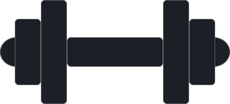
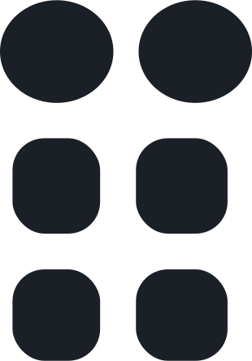
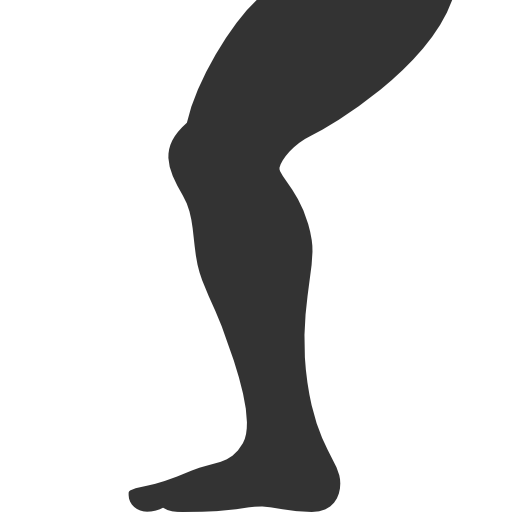

Rutinas
Contacto
RUTINAS
Pesas para Baloncesto

Supino + Propino
Abrir y Cerrar
Bíceps a dos manos 1:48
Bíceps en diagonal 6:30
Levantamiento en 90° 5:10
Russian Twist 1:35
Papa Caliente 2:20
e
Abdominales con dos pesas 3:15
Alrededor del mundo 4:10
Halo 5:15
Russian Swings 6:25
X Cross 7:15
Abs Curls 8:20
Remo de pie + Zancada 0:35
Zancada dinámica 1:05
Zancada + hombros 1:30
Remo de pie 3:55
Sentadila + peso muerto 4:20
Caminata del granjero. Variante 1 0:30
Zancada Frontal 1:00
Peso Muerto unipodal 4:30
Sentadilla búlgara 2:15
Triple extensión
Zancada en el sitio 2:10
Peso muerto 3:05
Caminata del granjero
Caminata del granjero. Variante 2
Peso muerto unilateral dinámico a una pesa
Peso muerto unilateral dinámico a dos pesas
Sentadilla con extensión de disco
Sentadilla con extensión de disco a una pierna
Simulación de pase a una pierna
Pase de mano a mano inclinado
Remo unilateral con inestabilidad
Press a una mano
Press a una mano + levantamiento de pierna
Hip trhust unilateral
Renegade Rows
Farmer estático
Aguante a una pierna
Remo en estático
Sentadilla búlagara isométrica
Brazos
Nivel 1
Nivel 2
Nivel 3
Core

Nivel 1
Nivel 2
Nivel 3
Piernas

Nivel 1
Nivel 2
Nivel 3